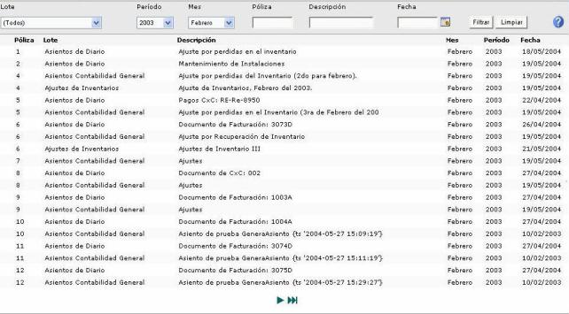

Consulta: Pólizas contables
Genera la consulta de pólizas contabilizadas por el sistema, seleccione los parámetros lote, período y mes adicionalmente ingrese número de póliza, descripción y fecha. Una vez filtrados los datos haga clic sobre la póliza solicitada.

Figura 1. Consulta de Póliza contable.
Si no selecciona algún parámetro se generará
el reporte con todos los datos que existan, una vez generado el mismo
puede ser impreso haciendo clic sobre el icono  .
.

Figura 2. Reporte de la consulta de pólizas contables.